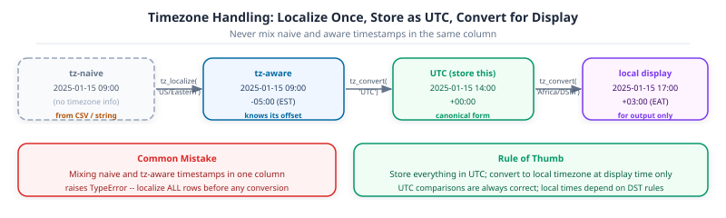

import numpy as np
import pandas as pd
attendance = pd.read_csv("data/daily_attendance.csv")
attendance.dtypesdate str
school_id int64
attendance_rate float64
dtype: object

The attendance report says 87% for Monday. Is that better or worse than last month? You have the numbers but the date column is plain text – pandas can’t slice by month, compute week-over-week changes, or resample to monthly totals until the column is a proper datetime type with a DatetimeIndex. This notebook adds that infrastructure, using daily attendance records across five schools over a full term.
Part 10 (10-combining-reshaping.ipynb) introduced time series data and basic date parsing. This notebook goes deeper: DatetimeIndex slicing, resample, timezones, and lag features – the same building blocks used in Part 12 (11-polars.ipynb) and, later, in forecasting.
Callout markers used throughout this notebook are explained on the book cover page.
import numpy as np
import pandas as pd
attendance = pd.read_csv("data/daily_attendance.csv")
attendance.dtypesdate str
school_id int64
attendance_rate float64
dtype: objectThe date column above read in as plain text, str dtype, not a date pandas can do arithmetic on. pd.to_datetime converts it to pandas’ dedicated datetime dtype, datetime64:
attendance["date"] = pd.to_datetime(attendance["date"])
attendance.dtypesdate datetime64[us]
school_id int64
attendance_rate float64
dtype: object Key Concept: Pandas 3 infers the resolution it needs, not always nanoseconds
Earlier pandas versions always stored datetimes as datetime64[ns], nanosecond precision, whether the data needed it or not. Pandas 3’s to_datetime infers a resolution from what is actually in the data: day-level strings like the ones here become datetime64[s] or coarser, not nanoseconds. attendance[“date”].dtype shows whichever resolution was inferred for this column.
A single value out of a datetime column is a Timestamp, pandas’ equivalent of Python’s datetime.datetime, with the same year, month, day, and weekday attributes:
first_day = attendance["date"].iloc[0]
print(type(first_day))
print(f"year={first_day.year}, month={first_day.month}, day_name={first_day.day_name()}")<class 'pandas.Timestamp'>
year=2025, month=1, day_name=Monday Activity 1 - Parse and Inspect
[“2025-01-06”, “2025-02-14”, “2025-03-28”], to Timestamp values with pd.to_datetime, then print the day name of each one.
dates = pd.to_datetime(["2025-01-06", "2025-02-14", "2025-03-28"])
for d in dates:
print(d.day_name())
# TODO: convert the three date strings and print each day name
...DatetimeIndexSetting a datetime column as the index turns it into a DatetimeIndex, which unlocks date-based slicing instead of only position-based or exact-label lookups. Each school’s rows are pulled out first, since a DatetimeIndex only makes sense for one time series at a time:
Key Concept: Setting a datetime column as the index creates a DatetimeIndex that unlocks date-based slicing
Once you call .set_index('date') on a datetime column, the result has a DatetimeIndex. You can then use partial date strings in .loc – school.loc['2025-02'] selects every row in February without spelling out start and end times. Without a DatetimeIndex, .loc requires an exact label match; with one, it understands periods.
school_300 = attendance[attendance["school_id"] == 300].set_index("date")
school_300.indexDatetimeIndex(['2025-01-06', '2025-01-07', '2025-01-08', '2025-01-09',
'2025-01-10', '2025-01-13', '2025-01-14', '2025-01-15',
'2025-01-16', '2025-01-17', '2025-01-20', '2025-01-21',
'2025-01-22', '2025-01-23', '2025-01-24', '2025-01-27',
'2025-01-28', '2025-01-29', '2025-01-30', '2025-01-31',
'2025-02-03', '2025-02-04', '2025-02-05', '2025-02-06',
'2025-02-07', '2025-02-10', '2025-02-11', '2025-02-12',
'2025-02-13', '2025-02-14', '2025-02-17', '2025-02-18',
'2025-02-19', '2025-02-20', '2025-02-21', '2025-02-24',
'2025-02-25', '2025-02-26', '2025-02-27', '2025-02-28',
'2025-03-03', '2025-03-04', '2025-03-05', '2025-03-06',
'2025-03-07', '2025-03-10', '2025-03-11', '2025-03-12',
'2025-03-13', '2025-03-14', '2025-03-17', '2025-03-18',
'2025-03-19', '2025-03-20', '2025-03-21', '2025-03-24',
'2025-03-25', '2025-03-26', '2025-03-27', '2025-03-28'],
dtype='datetime64[us]', name='date', freq=None) Common Mistake: Setting the index before filtering to one entity
attendance.set_index(“date”) on the full table produces a DatetimeIndex with the same date repeated once per school, since every school has a row for every day. Slicing that index by date then returns rows from every school mixed together for that date, not a clean single time series. Filter to one entity first, exactly as school_300 does above, then set the index.
Activity 2 - Build Another School’s Series
attendance to school_id == 302, set date as the index, and confirm the result’s index is a DatetimeIndex with isinstance(result.index, pd.DatetimeIndex).
school_302 = attendance[attendance["school_id"] == 302].set_index("date")
isinstance(school_302.index, pd.DatetimeIndex)
# TODO: filter to school_id 302, set date as index, confirm DatetimeIndex
...A DatetimeIndex accepts a partial date string in .loc, matching every row that falls inside it. "2025-02" selects the whole month without spelling out the first and last day:
school_300.loc["2025-02"].head()| school_id | attendance_rate | |
|---|---|---|
| date | ||
| 2025-02-03 | 300 | 0.885 |
| 2025-02-04 | 300 | 0.942 |
| 2025-02-05 | 300 | 0.900 |
| 2025-02-06 | 300 | 0.892 |
| 2025-02-07 | 300 | 0.895 |
A slice with two partial dates selects everything between them, inclusive of both ends:
school_300.loc["2025-02-01":"2025-02-07"]| school_id | attendance_rate | |
|---|---|---|
| date | ||
| 2025-02-03 | 300 | 0.885 |
| 2025-02-04 | 300 | 0.942 |
| 2025-02-05 | 300 | 0.900 |
| 2025-02-06 | 300 | 0.892 |
| 2025-02-07 | 300 | 0.895 |
Example: Comparing the size of two date ranges
len(school_300.loc[“2025-01”]) against len(school_300.loc[“2025-02”]) confirms the row count for each month matches its number of business days, the same bdate_range weekday-only pattern used to build this dataset in the first place.
print(f"January business days : {len(school_300.loc['2025-01'])}")
print(f"February business days : {len(school_300.loc['2025-02'])}")January business days : 20
February business days : 20 Activity 3 - Filter the Last Two Weeks of Term
school_300 from “2025-03-15” to “2025-03-28” inclusive, and print the mean attendance_rate over that range.
last_two_weeks = school_300.loc["2025-03-15":"2025-03-28"] last_two_weeks["attendance_rate"].mean()
# TODO: select 2025-03-15 through 2025-03-28 and print the mean attendance_rate
...resampleresample changes the time granularity of a series: daily data summarized into weekly or monthly figures, the same split-apply-combine idea from Part 3’s groupby, except the groups are time intervals instead of category values:
weekly_attendance = school_300["attendance_rate"].resample("W").mean()
weekly_attendance.head()date
2025-01-12 0.8896
2025-01-19 0.9044
2025-01-26 0.9144
2025-02-02 0.9054
2025-02-09 0.9028
Freq: W-SUN, Name: attendance_rate, dtype: float64 Key Concept: resample groups by time interval, groupby groups by value
df.groupby(“caste”) (Part 3) splits rows by whatever value is already in the caste column. series.resample(“W”) splits rows by which week their DatetimeIndex label falls into, intervals that did not exist as a column at all until resample created them. Both still end with an aggregation like .mean() to combine each group into one number.
Monthly resampling on the same series needs only a different frequency string. In pandas 3 the old "M" alias was removed; the replacement is "ME" (month-end), which anchors each bucket to the last calendar day of the month:
monthly_attendance = school_300["attendance_rate"].resample("ME").mean()
monthly_attendancedate
2025-01-31 0.90345
2025-02-28 0.90985
2025-03-31 0.86510
Freq: ME, Name: attendance_rate, dtype: float64 Pro Tip: Resampling the whole DataFrame keeps every entity separate, with care
attendance.set_index(“date”).groupby(“school_id”)[“attendance_rate”].resample(“W”).mean() resamples each school’s series independently in one call, instead of looping over schools and resampling each one by hand. groupby before resample is what keeps the schools from being averaged together.
Activity 4 - Monthly Comparison Across Schools
date as the index on the full attendance table, group by school_id, and resample to monthly means in one chained call. Use “ME” (month-end): the pandas 3 replacement for the removed “M” alias.
attendance.set_index("date").groupby("school_id")["attendance_rate"].resample("ME").mean()
# TODO: set date as index, group by school_id, resample monthly, take the mean
...The timestamps in this dataset are naive: they carry no timezone information. That is fine for a single-country attendance dataset. It is not fine for anything that crosses system boundaries: API responses, cloud server logs, or sensor readings from devices in different cities. Naive timestamps from different sources silently offset against each other when you join them, with no error to warn you.
Two operations handle timezones in pandas:
tz_localize(tz): stamps a naive series with a timezone. The values don’t change, only their meaning.tz_convert(tz): shifts a timezone-aware series to a different timezone. The values change to represent the same instant in the target zone.The standard practice for storage: localize to UTC, convert to local time only for display.
# Localize the naive DatetimeIndex to East Africa Time (UTC+3, Tanzania/Kenya)
school_300_eat = school_300.copy()
school_300_eat.index = school_300_eat.index.tz_localize("Africa/Nairobi")
print("Localized (EAT):", school_300_eat.index[:2])
# Convert to UTC for storage
school_300_utc = school_300_eat.copy()
school_300_utc.index = school_300_utc.index.tz_convert("UTC")
print("UTC: ", school_300_utc.index[:2])Localized (EAT): DatetimeIndex(['2025-01-06 00:00:00+03:00', '2025-01-07 00:00:00+03:00'], dtype='datetime64[us, Africa/Nairobi]', name='date', freq=None)
UTC: DatetimeIndex(['2025-01-05 21:00:00+00:00', '2025-01-06 21:00:00+00:00'], dtype='datetime64[us, UTC]', name='date', freq=None)
Key Concept: Store in UTC, display in local time
UTC has no daylight saving transitions and no ambiguous hours, so it’s the only safe format for storing timestamps that will be compared, sorted, or joined across sources. Localize to UTC at ingestion; convert to the user’s timezone only when formatting for display. Timestamps stored as naive local time break silently when DST shifts: two records that look 60 minutes apart may actually be 120 minutes apart, or the same instant twice.
Mixing naive and aware timestamps raises a TypeError, which is actually helpful: it prevents silent wrong answers.
school_300_utc.index[0] > school_300.index[0]
# TypeError: Cannot compare tz-naive and tz-aware datetime-like objectsThe fix is always to localize the naive series before comparing:
# Compare two timezone-aware timestamps safely
school_300_eat_end = school_300_eat.index[-1]
school_300_utc_end = school_300_utc.index[-1]
# Same instant, different representation
print("EAT end:", school_300_eat_end)
print("UTC end:", school_300_utc_end)
print("Same instant:", school_300_eat_end == school_300_utc_end)EAT end: 2025-03-28 00:00:00+03:00
UTC end: 2025-03-27 21:00:00+00:00
Same instant: True Common Mistake: Localizing when you should be converting
tz_localize stamps the existing values with a timezone label: 2025-01-06 00:00 becomes 2025-01-06 00:00+03:00. The number did not change. tz_convert shifts the values to represent the same instant elsewhere: 2025-01-06 00:00+03:00 becomes 2025-01-05 21:00+00:00. If you call tz_localize(“UTC”) on data that is actually in EAT, you have mislabelled it. The timestamps will compare as if they are 3 hours earlier than they really are.
Activity 5 - Localize and Convert
school_302 (built in Activity 2), localize its naive index to “Africa/Nairobi”, then convert to “Europe/London”. Print the first timestamp in both representations and confirm they are the same instant.
school_302 = attendance[attendance["school_id"] == 302].set_index("date")
s302_eat = school_302.copy()
s302_eat.index = s302_eat.index.tz_localize("Africa/Nairobi")
s302_london = s302_eat.copy()
s302_london.index = s302_london.index.tz_convert("Europe/London")
print(s302_eat.index[0])
print(s302_london.index[0])
# TODO: localize school_302 to Africa/Nairobi then convert to Europe/London
...A lag feature answers the question: “what was the value yesterday?” It is the most common feature engineering step for time series in ML. If Monday’s attendance rate predicts Tuesday’s, a lag-1 feature captures that relationship in a column a model can consume.
shift(n) moves values forward by n periods (positive = lag, negative = lead). The first n rows get NaN because there is no previous value to fill them.
rate = school_300["attendance_rate"].copy()
# lag-1: yesterday's attendance rate
lag1 = rate.shift(1)
lag1.name = "rate_lag1"
# lag-5: one school week ago
lag5 = rate.shift(5)
lag5.name = "rate_lag5"
features = pd.concat([rate, lag1, lag5], axis=1)
features.head(8)| attendance_rate | rate_lag1 | rate_lag5 | |
|---|---|---|---|
| date | |||
| 2025-01-06 | 0.874 | NaN | NaN |
| 2025-01-07 | 0.928 | 0.874 | NaN |
| 2025-01-08 | 0.933 | 0.928 | NaN |
| 2025-01-09 | 0.847 | 0.933 | NaN |
| 2025-01-10 | 0.866 | 0.847 | NaN |
| 2025-01-13 | 0.909 | 0.866 | 0.874 |
| 2025-01-14 | 0.896 | 0.909 | 0.928 |
| 2025-01-15 | 0.905 | 0.896 | 0.933 |
Key Concept: Lag features turn time series forecasting into supervised learning
A gradient boosting model doesn’t know what “time” means. It knows column values. Giving it a rate_lag1 column is how you communicate “yesterday’s value” in a language the model understands. A model trained on [rate_lag1, rate_lag5, day_of_week] predicting attendance_rate is a supervised regression problem built from a single time series. The NaN rows produced by shift must be dropped or filled before training.
# Rolling 5-day average: smooth out day-of-week noise
rolling_mean = rate.rolling(window=5).mean()
rolling_mean.name = "rate_rolling5"
# Rolling 5-day std: flags volatile weeks
rolling_std = rate.rolling(window=5).std()
rolling_std.name = "rate_rolling5_std"
feature_matrix = pd.concat([rate, lag1, lag5, rolling_mean, rolling_std], axis=1)
feature_matrix.dropna().head() # drop NaN rows before modelling| attendance_rate | rate_lag1 | rate_lag5 | rate_rolling5 | rate_rolling5_std | |
|---|---|---|---|---|---|
| date | |||||
| 2025-01-13 | 0.909 | 0.866 | 0.874 | 0.8966 | 0.038279 |
| 2025-01-14 | 0.896 | 0.909 | 0.928 | 0.8902 | 0.034172 |
| 2025-01-15 | 0.905 | 0.896 | 0.933 | 0.8846 | 0.026931 |
| 2025-01-16 | 0.880 | 0.905 | 0.847 | 0.8912 | 0.017964 |
| 2025-01-17 | 0.932 | 0.880 | 0.866 | 0.9044 | 0.019034 |
autocorr(lag) measures how strongly a series correlates with a delayed copy of itself. An autocorrelation close to 1 means yesterday’s value is a strong predictor of today’s: a useful sanity check before building a lag-based model.
for lag in [1, 5, 10]:
ac = rate.autocorr(lag=lag)
print(f"autocorr(lag={lag:>2}): {ac:.3f}")autocorr(lag= 1): 0.321
autocorr(lag= 5): 0.396
autocorr(lag=10): 0.313 Example: Reading autocorrelation results
A lag-1 autocorrelation of ~0.4 to 0.7 is typical for daily attendance data: yesterday’s rate is a moderate predictor of today’s but not a perfect one. A value near 0 means the series is essentially random from day to day. A value near 1 means it barely changes at all. The lag-5 value reflects the weekly pattern: a Monday is most similar to the previous Monday, not to last Friday.
Activity 6 - Build a Lag Feature Matrix
school_302, create a feature matrix with columns: the original attendance_rate, a lag-1 column, a lag-5 column, and a 3-day rolling mean. Drop NaN rows, then print the autocorrelation at lag 1 and lag 5. What do the values tell you about how predictable attendance is at school 302?
rate_302 = attendance[attendance["school_id"]==302].set_index("date")["attendance_rate"]
fm_302 = pd.concat([
rate_302,
rate_302.shift(1).rename("lag1"),
rate_302.shift(5).rename("lag5"),
rate_302.rolling(3).mean().rename("rolling3"),
], axis=1).dropna()
print(fm_302.head())
print("autocorr lag1:", rate_302.autocorr(lag=1).round(3))
print("autocorr lag5:", rate_302.autocorr(lag=5).round(3))
# TODO: build lag feature matrix for school_302 and check autocorrelations
...Combine every operation from this notebook: parsing dates, building a per-school time series, slicing by date, and resampling, into one short report comparing the start and end of term.
Capstone Exercise - Term-End Attendance Report
date as the index on the full attendance table (Sec. 2)
school_id and resample to weekly means (Sec. 4)
weekly = attendance.set_index("date").groupby("school_id")["attendance_rate"].resample("W").mean()
first_week = weekly.loc[:, "2025-01-06":"2025-01-12"]
last_week = weekly.loc[:, "2025-03-24":"2025-03-28"]
drop_per_school = first_week.groupby("school_id").mean() - last_week.groupby("school_id").mean()
drop_per_school.sort_values(ascending=False)
# TODO: build the term-end attendance report described above
...| Resource | Why it matters |
|---|---|
| McKinney, W. (2022). Python for Data Analysis, 3rd ed. O’Reilly. | Chapter 11 (time series) is the most complete treatment of DatetimeIndex, resample, and rolling with pandas |
| pandas documentation: Time series / date functionality | The authoritative reference for pd.date_range, offset aliases, time zones, and Period |
| pandas documentation: Time zone handling | tz_localize, tz_convert, and the ambiguous-times edge cases |
| McKinney, W. (2011). Time series analysis in Python with pandas. SciPy 2011. | The original paper describing pandas’ time series design; short and still accurate |
| Hyndman, R.J. & Athanasopoulos, G. (2021). Forecasting: Principles and Practice, 3rd ed. | Free at otexts.com/fpp3: the next step after understanding how to store time series data is learning how to model it |
| Concept | Key rule |
|---|---|
pd.to_datetime |
Parses text into pandas’ datetime64 dtype; pandas 3 infers the resolution instead of always using nanoseconds |
Timestamp |
A single datetime value, with .year, .month, .day_name(), and similar attributes |
DatetimeIndex |
Set a datetime column as the index to unlock date-based slicing |
| Filter before indexing | Set a DatetimeIndex on one entity’s rows, not a table mixing several entities at the same dates |
.loc["2025-02"] |
A partial date string selects every row inside that period |
.loc[start:end] |
A date range slice is inclusive of both ends |
.resample("ME") |
Groups rows by month-end interval; "ME" is the pandas 3 replacement for the removed "M" alias |
groupby(...).resample(...) |
Resample each entity’s series independently in one chained call |
tz_localize(tz) |
Stamps a naive timestamp with a timezone; values don’t shift |
tz_convert(tz) |
Shifts a timezone-aware timestamp to a different zone; values change |
| Store UTC | Localize to UTC at ingestion, convert to local time only for display |
shift(n) |
Creates lag (positive n) or lead (negative n) features; first n rows become NaN |
rolling(n).mean() |
Rolling window average; smooths noise and is a useful feature in its own right |
autocorr(lag=n) |
Measures how strongly a series predicts itself n steps ahead; guides lag feature selection |
Next: 11-polars.ipynb, covering Polars’ DataFrame, expression API, lazy evaluation, and streaming.